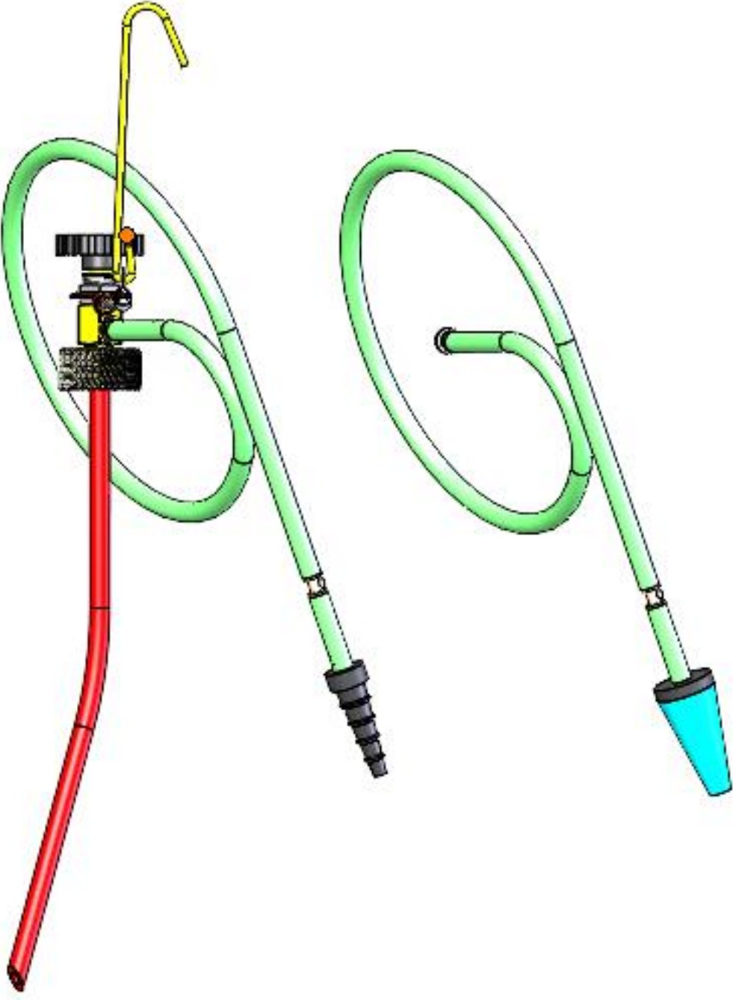

Doc no. MOC-TSB-24-04 // Vol. 24 No. 04 // Aug 1, 2024 // Fuel
Deluxe Induction Service Tool
New72150
A new Deluxe Induction Tool with a cone adapter, giving technicians more service port options.
What's new
The cone adapter is for vehicles with no vacuum hose connection near the throttle body: use it in the MAP sensor location to perform the service. The tool makes for a quick, reliable induction cleaning service. Both adapters are included.
Contact
For more information, contact the Machine & Equipment Department at 866.244.6621.

Part numbers
| Part No. | Description | Notes |
|---|---|---|
| 72150 | Deluxe Induction Tool with Cone | Both adapters included |